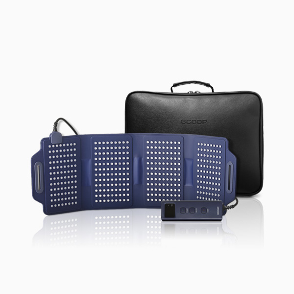

지쿱 라피V
저출력 레이저로 관절통증 관리
- 회원가입 없이 회원가
- 지쿱 본사 정품 직접 발송
- 5만 원 이상 무료배송
지쿱 라피V 상세 설명 · 원료와 특징
통증완화를 위한 의료용레이저조사기!!
지쿱 라피 V 본 제품은 의료기기 3등급의 의료용레이저조사기 제품입니다.
“사용 상의 주의사항” “사용방법”을 잘 읽고 사용하십시오.
제품 특징 통증 완화를 위한 사용하기 쉬운 의료용레이저조사기 통증 부위에 빠르고 쉽게 적용 가능한 의료기기 통증 완화 목적 의료용레이저조사기 피부질환 완화 목적 개인용광선조사기 근육통 완화 목적 개인용적외선조사기 고효율 레이저 18개 + 근적외선 30개 + 기존 동일 360개 = 총 408개 적용 식약처 인증 의료기기 3등급 408개의 광에너지를 피부에 조사하여 통증 완화 의료용레이저조사기로 광 에너지를 조사하여 생체 촉진효과를 일으켜 통증 완화
적외선 LED를 적용하여 통증에 듀얼 효과 저온 화상 예방을 위한 온도센서 2개 설치 식약처 신규 법률 적용 45 ℃ -> 41℃로 저온화상에 대한 안전 적용 프리볼트를 적용하여 해외에서도 사용 가능 특허 등록 “플렉서블 무릎 관절 통합관리 광선조사기” 보조배터리 사용이 가능하며, 언제어디서나 편리하게 사용 집에서 편안하고 쉽게 통증 완화!!
매일 꾸준히 사용하면 통증 완화됨(1일 1~2회 사용 가능 | 1회 사용 시간: 30분) 30분이 다양한 임상 연구에 의해 최적의 통증 완화 지속 시간임이 입증 지쿱 라피 V는 650nm 저출력 레이저와 660nm Low-Level LED, 870nm 적외선 LED로 총 408개의 광원 통증을 완화하고 관리하는데 도움을 주는 의료기기 친환경 실리콘 소재로 피부에 안전하고 편리하게 사용 가능 가볍고 유연한 실리콘 소재로 다양한 부위의 체형에 알맞게 적용 가능
피부에 밀착되어 사용이 편리함 목부위 허리 또는 등 부위 무릎부위 어깨부위 팔부위 손목부위 발목부위 지쿱 라피 V 차별화 광 밀도가 높고 면적이 넓어 통증 부위에 집중적이고 넓은 영역에 사용 방열효과(온도상승으로 인한 Off 현상 방지)로 광에너지에 대한 통증 완화 효과를 지속할 수 있음 친환경 실리콘 소재로 가볍고 유연하여 컴팩트한 사이즈로 쉽게 접을 수 있어 보관이나 이동이 편리 408개의 광원이 통증 부위에 조사되어 통증을 완화
저온 화상을 방지하기 위한 자동 온도 제어 기능이 탑재 자동 온도 제어를 위한 온도 센서 2개 설치로 더욱 안전하게 사용 저온 화상을 방지하기 위해 41°C 이하로 온도를 유지 피부에 완전히 밀착되어 효과적인 통증 완화 효과 휴대성과 사용 편의성을 향상시키기 위한 보조배터리 사용 가능 보조배터리(불포함, 개인구매) 보조배터리 연결 트리거 케이블 포함 ※ 보조배터리 사양 - 개인구매시 참고 - 정격용량 : DC 3.7V / 20000mAh / 74Wh
- 정격출력 : DC 12V 1.5A ※ 보조배터리 연결 트리거 케이블 사양 - USB-A to DC Jack (5.5 x 2.1mm) 트리거 케이블 - DC 12V 1.5A 전원이 출력되는 Q3.0 트리거 신호발생 특허 및 인허가 라피 V 특허 플렉서블 무릎 관절 통합관리 광선조사기 제너럴바이오㈜ 식약처 의료기기 제조 및 품질 GMP 인증서 미국 FDA Class II Medical Device
( 등록번호 : D469830 ) 의료기기 제조 허가증 ( 분류번호(등급) : A37020.01(3) ) 이런분들께 추천드립니다.
나이가 들어서 예전같지 않은 분 출산 후 관절 등 부위가 시리신 분 무거운 물건을 자주 드는 분 골프, 등산 등 운동을 즐기시는 분 다양한 육체 활동을 하고 있으신 분 온 몸이 뻐근하신 분 조작방법 및 사용방법 표시창 (온도, 시간) 동작버튼 자동버튼 정지버튼 컨트롤러 파워 어댑터의 전원 플러그를 상용 전원 콘센트에 연결한다.
파워 어댑터의 연결 컨넥터를 컨트롤러와 연결한다.
케어가 필요한 부위에 본체기기를 적용한다.
원하는 케어 부위에 따라 동작버튼 또는 자동버튼을 누른다.
- 동작버튼 : 30분 운전 , 10분 정지 (온도 설정에 의해 OFF 되는 경우 운전시간에 포함되지 않으며, 멜로디 소리도 나지 않습니다.) - 자동버튼 : 30분 운전 후 정지 운전을 정지하고자 하는 경우 정지버튼을 누른다.
사용이 완료되면 파워 어댑터의 전원 플러그를 콘센트에서 분리한다.
더 자세한 사항은 (지쿱 라피 V의 올바른 사용법)을 참고한다.
※ 노란색 영역에서 빛이 보이지 않는 LED는 적외선 LED로 사람의 눈에 보이지 않습니다.
정상적으로 작동중이니 절대 직접 들여다보지 마십시오.
지쿱 라피 V 올바른 사용방법.
통증 완화를 원하는 부위에 LAPY V를 잘 감싼 후 제품과 함께 제공된 밴드로 가볍게 고정합니다. 밴드를 고정한 후 연결케이블과 파워어뎁터의 DC잭을 컨트롤러에 연결하고 전원 코드를 파워어뎁터에 연결한후 콘센트에 연결합니다. 밴드를 강하게 조일 경우 통증이 있을 수 있으니 가볍게 고정시켜 주십시오.
동작버튼을 누르면 레이저가 환부에 직접 조사됩니다. 이때, 가능한 맨 살에 사용해 주십시오. (옷 위에 사용하시면 효과가 반감됩니다) 너무 뜨겁게 느껴지거나 땀이 나는 경우 피부에 얇은 흰색천을 대고 그 위에 LAPY V를 올려놓고 사용하십시오.
동작 버튼을 누르고 사용할 경우 온도가 40.9도까지 작동을 하고 표시창에 40도가 표기 됩니다. 온도가 41도가 되면 온도를 내리기 위해서 일시적으로 레이저 조사가 멈추게 됩니다. 장치가 식어 38도가 표기되면 레이저 조사는 다시 시작됩니다. 동작 모드에서 사용하시는 동안 계속해서 41도에서 꺼지고 38도에서 작동하는 동작을 반복합니다. 레이저의 누적 조사 시간이 30분이 경과되면 사용자의 안전을 위해 10분간 휴식 후 다시 조사 됩니다.
자동 버튼을 누르고 사용할 경우 표시창에 30분이라는 숫자가 표시되며 치료 시간 경과에 따라 30분에서 1분까지 낮아집니다. (사용 중 레이저 불이 꺼짐 켜짐이 반복할 수 있습니다) 조사가 종료 되면 신호음이 울리면서 숫자가 사라집니다. 시작부터 종료 시까지 소요되는 실제 운전 시간은 환자의 상태에 따라 40분에서 10시간까지 편차가 있습니다.
제품 벨트 착용법 본체 벨트 전면 벨트 후면 벨크로 후면 가죽 팔 또는 무릎에 찰 경우 1. 본체의 광원부위가 보이도록 위치합니다.
2. 벨트의 전면 부위가 보이도록 위치합니다.
3. 벨트 전면의 좌측 부분을 본체 기기의 좌측 구멍에 끼워 굽힌 후 벨크로를 붙입니다.
4. 의료기기의 광원부가 환부를 향하도록 부착하고 벨트를 의료기기 본체에 둘러 벨크로를 붙입니다.
허리 또는 등에 찰 경우 4. 본체를 배 또는 등에 부착한 뒤 벨트의 고정되지 않은 부분을 의료기기 우측 구멍에 끼워서 굽혀 줍니다.
5. 굽혀진 벨트를 원하는 곳에 위치한 후 벨크로로 고정합니다
보관방법 1. 본체기기를 그림과 같이 접어 보관합니다.
2. 벨트를 먼저 반으로 접은뒤 지그재그 형태로 접습니다.
파워어댑터 전원 케이블 3. 파워어댑터와 전원 케이블을 정리합니다.
4. 파워어댑터와 전원 케이블을 ①에 넣고 그 위에 본체를 올립니다. 그 다음 컨트롤러와 끈을 자리에 맞게 넣어 보관합니다
사용환경과 보관조건 물기가 없는 곳, 실온에서 보관한다.
화학약품 등의 제품이나 가스가 발생하는 곳을 피해서 보관한다.
사용 후 본체기기 전면부(광원)를 마른 걸레 등으로 닦는다.
본체기기 전면부(광원)에 이물질이 있는 경우 면봉으로 가볍게 닦아낸다.
어린이 손에 닿지 않는 장소에 보관한다.
사용하신 후에 다음의 순서로 하여 보관한다.
(1) 파워 어댑터의 전원 플러그를 콘센트에서 분리한다.
(2) 컨트롤러에 연결된 파워 어댑터의 잭을 분리한다.
주의사항 및 안전상의 경고 사용하기 전에 모든 안전 주의 사항 및 경고를 주의 깊게 읽으십시오 피부가 민감하거나 약하신 분, 연세가 많으신 분은 저온화상의 우려가 있을 수 있으므로 반드시 얇은 흰색 면 수건이나, 흰색 내의 위에 조사하십시오. 또한 뜨거우시면 즉시 사용을 중단하십시오.
사용 시, 땀이 날 경우 반드시 흰색 면 수건이나 흰색 내의 위에서 조사하십시오. 제품은 마른 수건으로 깨끗이 닦아주시고, 피부는 깨끗이 씻어주십시오. (주의: 피부를 씻지 않은 경우, 피부가 검게 물들 수 있음) 눈과 얼굴에는 사용하지 마십시오. (관절 부위 이외의 사용을 권하지 않음).
고온의 전기장판, 매트 등에서 사용하지 마십시오. 외부열로 인해 제품이 손상될 수 있습니다. (고장 시 소비자과실로 유상수리).
기기 사용 시 두꺼운 이불이나 담요 등으로 덮어 놓지 마십시오. 온도센서가 오작동 할 수 있습니다.
관절 관련 파스, 크림, 기타 약품과 함께 사용하지 마십시오. 함께 사용 시 심각한 고장 및 제품 의 변형, 파손의 원인이 됩니다. (고장 시 소비자 과실로 유상수리).
본체를 허리 밑이나 엉덩이로 깔고 절대 사용하지 마십시오. (통증 완화 효과를 보기 어렵습니다. 고장 시 소비자과실로 유상수리 됩니다.) 습도가 높은 곳에서 사용하지 마십시오.
고장 발생시 임의로 분해하지 마십시오. 임의로 분해 시 A/S는 불가하며, 추후 발생되는 어떠한 문제에도 책임지지 않습니다.
취급 시 떨어뜨리거나 무리한 충격을 주지 마십시오.
본체와 연결되는 전선부위에는 무리한 힘을 가하지 마십시오.
접촉고장현상(조절기 숫자 오작동 레이저 불 깜박임)발생 시 즉시 사용 중단 후 구입처로 연락 바랍니다.
상기와 같은 고장상태로 장기간 사용할 경우 제품에 심각한 손상을 줄 수 있습니다.
물이 묻은 손으로 본체나 콘센트, 컨트롤러를 만지지 마십시오 본 제품은 저출력 레이저가 탑재된 제품으로 직접 눈으로 보거나 다른 사람 눈을 향하여 사용하지 마십시오. 시력에 장해가 발생할 수 있습니다.
소비자 부주의로 인해 발생되는 문제는 당사에서 책임 지지 않습니다.
지쿱 본사 제품 상세페이지 내용을 옮겨 정리했어요.
상품정보제공고시
| 품명 및 모델명 | LAPY V / GB-KR21001MDR |
|---|---|
| 의료기기법상 허가·신고 번호(허가·신고 대상 의료기기에 한함) 및 광고사전심의필 유무 | 제허 23-535 |
| 정격전압, 소비전력 (전기용품에 한함) | 220Vac , 60Hz, 40VA |
| 동일모델의 출시년월 | 2023년 04월 |
| 제조자, 수입품의 경우 수입자를 함께 표기 (병행수입의 경우 병행수입 여부로 대체 가능) | 제조업체 : 제너럴바이오㈜, 제조의뢰자 : 퓨리글로벌㈜ |
| 제조국 | 대한민국 |
| 제품의 사용목적 및 사용방법 | 1. 의료용레이저조사기 : 통증 완화를 목적으로 방사되는 광에너지 (레이저)를 피부에 쬐어 사용하는 기구 2. 개인용광선조사기 : 광선(적색광)을 이용하여 피부질환을 완화하는데 사용하는기구 3. 개인용적외선조사기 : 적외선 에너지를 인체에 조사하여 근육통 완화에 사용하는 기구 |
| 취급시 주의사항 | 본 제품은 의료기기 제품으로 사용 전 사용설명서를 읽은 후 사용하시길 바랍니다 . |
| 품질보증기준 | 구매일로부터 1년 |
| A/S 책임자와 전화번호 | 퓨리글로벌㈜ / 031-205-0501 |
홈케어 기기 다른 제품
배송·교환·반품
지쿱 본사에서 직접 발송해요. 50,000원 이상 주문 시 무료배송, 50,000원 미만은 배송비 2,500원이에요. A/S·교환·반품은 카카오톡으로 문의 주시면 지쿱 본사로 접수해 드려요.